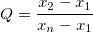

から
から  までの値を出します。
までの値を出します。 (最小観測値)
または
 (最大観測値)
(最大観測値)
内容 |
統計：記述統計：DixonのQ 検定
DixonのQ 検定を行い、外れ値の特定と棄却を行います。
必要なOriginのバージョン: Origin 9.0 SR0以降
メニュー利用はOrigin 9.1 SR0 から可能
1. qtest
2. qtest ix:=col(2)[1:7] alpha:=0.01
3. qtest ix:=col(1)[3:10] alpha:=0.05 box:=1
| 表示名 | 変数名 | I/Oとタイプ | デフォルト値 | 説明 |
|---|---|---|---|---|
| 入力 | ix |
入力 vector |
<active> |
1つの列につき、3 から 10 のデータ数でなければなりません。 |
| 有意水準 | alpha |
入力 double |
0.05 |
オプションリスト
|
| 最大Qのデータポイント | ox |
出力 double |
<unassigned> |
疑わしいポイントの値 |
| 最大Qのデータインデックス | index |
出力 int |
<unassigned> |
疑わしいポイントの行インデックス |
| 最大Q値 | qstat |
出力 double |
<unassigned> |
疑わしいポイントから計算されたQ値 |
| 棄却限界Q値 | critical |
出力 double |
<unassigned> |
指定された有意水準の棄却限界Q値 |
| 有意検定 | sig |
出力 int |
<unassigned> |
sig=1 は外れ値がある事を意味し、 sig=0 は外れ値が無いことを意味します。 |
| 結論 | conclusion |
出力 string |
<unassigned> |
統計結果を含んだ、結論の文書 |
| 外れ値のグラフ | box |
入力 int |
0 |
外れ値のグラフを作成するかどうか指定します。box=1は作成を意味し、box=0は作成しない事を意味します。 |
| Q検定のプロットデータ | rd |
出力 ReportData |
[<入力>]<新規> |
外れ値のグラフオプションが選択された時、そのデータを入力したワークシートの範囲を示します。 |
| Q検定のレポート | rt |
出力 ReportTree |
[<入力>]<新規> |
レポート表を出力するワークシート範囲を示します。 |
3 から 10 個のデータポイントを有するデータでデータセットの外れ値を検定します。有意水準は0.01, 0.05, 0.1 から選べます。
繰返しのある計測から順に取り出した結果です。
から までの値を出します。 (最大観測値)Stephen L R. Ellison, Vicki J. Barwick and Trevor J Duguid. Farrant. 2009. Practical Statistics for the Analytical Scientist. The Royal Society of Chemistry, Cambridge, UK.